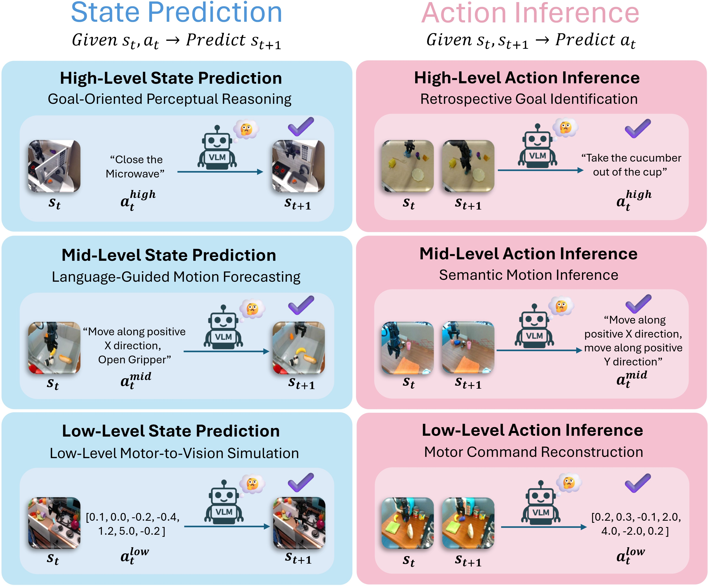

Click backdrop · press Esc to close
Action Interface for Embodied Question Answering
Bridging the Semantic–Physical Divide in Robot Action Understanding
While Vision-Language Models (VLMs) are increasingly integral to embodied intelligence, a significant action understanding bottleneck persists in translating high-level semantic instructions into precise low-level physical actions. However, current benchmarks for embodied agents primarily focus on high-level perception and planning, failing to capture the depth and nature of this semantic-to-physical gap.
To address this, we introduce ActionEQA, the first Embodied Question Answering (EQA) benchmark designed to methodically evaluate the ability of VLMs to bridge this critical yet underexplored semantic-physical divide. Grounded in real-world robotics data, ActionEQA thoroughly analyzes VLMs' grasp of the action interface using a dual-tier design: (1) a Three-Tiered Action Hierarchy for pinpointing the depth at which VLMs' action reasoning collapses, and (2) Bidirectional Reasoning Tasks for testing whether VLMs struggle more to predict action outcomes or infer the actions that led to them.
Our key findings reveal: (1) The primary bottleneck in action understanding occurs at the mid-level, arising from the challenge of grounding compositional language in 3D physical geometry. (2) VLMs are more adept at inferring past actions than predicting their future outcomes. (3) Richer visual inputs require greater spatial reasoning from VLMs to map actions to physical geometry. (4) Within the action hierarchy, model failures shift from predominantly perceptual errors at the high level to flawed geometric and physical reasoning at the low level.
Evaluates VLMs at High (task goals), Mid (semantic motion), and Low (7-DoF motor commands) levels — enabling pinpoint diagnosis of where action reasoning collapses across the semantic-to-physical spectrum.
State Prediction: given a starting frame + action, predict the goal state. Action Inference: given before/after frames, identify the action that caused the transition.
Grounded in three large-scale datasets: BridgeData V2, DROID, and RT-1, covering 8,795 questions, 26,213 unique images, and 2,629 unique episodes.
Contrary to expectation, a V-shaped performance trend emerges: models struggle most at mid-level (semantic motion) — not low-level. Verified via paired t-tests across all 34 models (p < 0.001, mean diff. +18.93% vs. high, +8.66% vs. low).
Evaluates 26 open-weights and 8 proprietary VLMs. Best model (Gemini-2.5-Pro) achieves 58.4% overall vs. 95.6% human performance — a 37.2% gap highlighting the immense challenge.
Richer visual inputs (more camera views) don't consistently help and can hurt advanced models. Egocentric views dominate single-view scenarios with a +23.8% advantage on H-AI tasks — the bottleneck is reasoning, not perception.
ActionEQA is a visual question-answering benchmark for robot action understanding, designed to probe VLMs across two task types and three action abstraction levels.

Accuracy (%) on State Prediction (SP) and Action Inference (AI) across High (H), Mid (M), and Low (L) action levels on DROID, BridgeData V2, and RT-1.
Our evaluation of 34 VLMs on ActionEQA reveals four critical insights into the semantic-to-physical gap, from a surprising V-shaped bottleneck to a fundamental shift in error nature across the action hierarchy.
Rather than a monotonic decline, VLMs exhibit a V-shaped performance profile — they struggle most with mid-level semantic motion descriptions, not low-level motor commands.
Contrary to expectation, VLMs do not degrade monotonically from abstract to concrete actions. Paired t-tests confirm a V-shaped bottleneck at the mid-level is statistically significant across all 34 evaluated models: mid-level accuracy is lower than high-level by +18.93 pp and lower than low-level by +8.66 pp (both p < 0.001). The core challenge is grounding compositional language — e.g., "Move along positive X-axis, Rotate clockwise around Z-axis" — into 3D physical geometry.
Overall accuracy per level computed via hierarchical averaging across all applicable datasets.
Within the mid-level bottleneck, rotational actions consistently yield the highest error rates across all view configurations — confirmed by paired t-test (p = 0.013, Cohen's d = 2.04 vs. translation). Gripper actions (open/close) are the easiest and even improve slightly with more views, while rotation and translation errors remain stubbornly high regardless of perceptual richness.
| Mid-Level Action Type | 1 View | 2 Views | 3 Views | 4 Views | Status |
|---|---|---|---|---|---|
| Rotation | 38.22% | 39.35% | 38.87% | 39.76% | Highest & Persistent |
| Translation | 34.95% | 35.77% | 35.64% | 36.18% | No Improvement |
| Gripper | 25.89% | 24.91% | 24.73% | 24.28% | Benefits from More Views |
Average normalized error rates (%) on BridgeData V2 by mid-level action type as exocentric views increase from 1 to 4.
A consistent asymmetry: Action Inference (retrospective) outperforms State Prediction (predictive) by 4.31% on average across all 34 models.
| Model | Type | SP Avg | AI Avg | Δ (AI−SP) |
|---|---|---|---|---|
| Gemini-2.5-Pro | Prop. | 53.2% | 63.7% | +10.5% ↑ |
| Gemini-2.5-Flash | Prop. | 42.7% | 51.2% | +8.5% ↑ |
| GPT-4.1 | Prop. | 48.9% | 44.0% | −4.9% ↓ |
| Ovis2.5-9B | Open | 35.3% | 49.6% | +14.3% ↑ |
| InternVL3-14B | Open | 38.9% | 45.5% | +6.7% ↑ |
| GLM-4.5V | Open | 48.0% | 44.4% | −3.6% ↓ |
| Human | — | 96.2% | 94.9% | −1.3% |
SP/AI averages computed via hierarchical averaging across all applicable datasets and action levels. Δ = AI − SP; positive values indicate AI outperforms SP.
ActionEQA's bidirectional framework exposes a striking asymmetry in VLM reasoning: models find it systematically easier to infer what action caused an observed outcome (Action Inference) than to predict the visual result of a planned action (State Prediction).
This gap is statistically significant across all 34 evaluated models (p < 0.001, paired t-test), with Action Inference outperforming State Prediction by an average of 4.31 pp. The top model, Gemini-2.5-Pro, shows the largest absolute gap: 63.7% AI vs. 53.2% SP — a 10.5 pp deficit in forward predictive reasoning.
This pattern reveals a fundamental weakness: current VLMs are better at retrospective explanation than prospective prediction of physical dynamics. Interestingly, humans exhibit the opposite trend — slightly better at SP — suggesting that predictive physical simulation is a distinctly human cognitive strength.
More views don't guarantee better performance — and the egocentric (first-person) perspective dominates in all single-view settings.
An ablation varying exocentric views from 1–4 on BridgeData V2 reveals a counterintuitive finding: advanced reasoning models like Gemini-2.5-Flash consistently degrade as more views are added, while open-weights models like InternVL3-14B improve monotonically. The divergence is strongly tied to task direction — Action Inference benefits from richer visual evidence, while State Prediction is fragile under multiple conflicting perspectives, as predicting a future outcome requires precise geometric reasoning that additional views can undermine rather than support.
Overall accuracy averaged across all six task categories (H/M/L × SP/AI).
SP/AI averages computed from H/M/L subtasks per model (same Y-axis scale for direct comparison). The contrasting trend — AI rising for most models while SP stagnates or falls — reveals why additional views help retrospective reasoning but burden predictive reasoning.
The egocentric (first-person) view unequivocally outperforms the exocentric (third-person) view across every action level and task direction (SP: p = 0.014; AI: p < 0.001), with the most striking advantage at high-level Action Inference (+23.8 pp). Counterintuitively, fusing both views degrades performance in almost all settings — the combined input introduces conflicting signals rather than synergy, with the worst drop at −6.8 pp for high-level State Prediction.
| Task | Action Level | Ego | Exo | Combined | Best Single View | Δ Combined |
|---|---|---|---|---|---|---|
| State Pred. | High-Level | 55.4 | 43.2 | 48.6 | Ego (+12.2) | −6.8 |
| Mid-Level | 35.9 | 34.0 | 35.5 | Ego (+1.9) | −0.4 | |
| Low-Level | 35.5 | 34.8 | 33.7 | Ego (+0.7) | −1.8 | |
| Action Inf. | High-Level | 80.3 | 56.5 | 77.0 | Ego (+23.8) | −3.3 |
| Mid-Level | 37.2 | 31.6 | 33.7 | Ego (+5.6) | −3.5 | |
| Low-Level | 51.6 | 48.6 | 51.8 | Ego (+3.0) | +0.2 |
Average accuracy (%) across representative VLMs on DROID dataset (the only source with both camera perspectives). Green bold = best single-view value (Ego column). Red = degradation in Δ Combined vs. best single view.
As actions become more granular, model failures shift from predominantly perceptual errors at the high level to geometric and physical reasoning errors at the low level.
A qualitative analysis of 150 sampled error cases from the top-performing model (Gemini-2.5-Pro) reveals a clear and systematic shift in the nature of failures across the three tiers. All errors fall into two broad categories: Perceptual Grounding Errors (misinterpreting the visual scene) and Reasoning Errors (flawed logic about physical dynamics). The balance between these two categories inverts as we move from high to low-level actions.
Errors break down into two main categories and four subcategories, with 11 distinct error types identified from qualitative analysis of 150 sampled failures (Gemini-2.5-Pro, 50 per action level).
Explore ActionEQA examples in real-time. Select a subset and browse the questions — images are loaded directly from HuggingFace.
If you use ActionEQA in your research, please cite our paper:
@article{bao2026actioneqa,
title = {ActionEQA: Action Interface for Embodied Question Answering},
author = {Bao, Tianwei and Wang, Qineng and Wang, Kangrui and Deng, Mingkai
and Liu, Guangyi and Mao, Jiayuan and Birnbaum, Larry and Hu, Zhiting
and Xing, Eric P. and Wang, Zhaoran and Li, Manling},
journal = {Transactions on Machine Learning Research},
issn = {2835-8856},
year = {2026},
url = {https://openreview.net/forum?id=HY2ruqdMt4},
}
ActionEQA is publicly available on HuggingFace. Subsets follow the naming pattern {bridge|droid|rt1}_{high|mid|low}_{forward|inverse}.
from datasets import load_dataset # Load BridgeData V2 · High-Level · State Prediction dataset = load_dataset( "TianweiBao/ActionEQA", "bridge_high_forward" ) # Load DROID · Mid-Level · Action Inference dataset = load_dataset( "TianweiBao/ActionEQA", "droid_mid_inverse" ) sample = dataset["train"][0] print(sample.keys()) # dict_keys(['frame1', 'action', 'option_A', 'option_B', # 'option_C', 'option_D', 'correct_ans'])
Click backdrop · press Esc to close